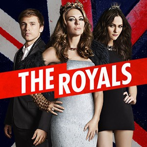

")
 
 IMDB-Wertung: 7.5 / 10
IMDB-Wertung: 7.5 / 10  Metascore:
Metascore: 
Der älteste Sohn von König Simon ist bei einem Militär-Manöver einem Unfall zum Opfer gefallen. Während der Monarch von diesem Schicksalsschlag schwer getroffen ist, managt Königin Helena die Krise: Sohn Liam rückt auf den Posten des Thronfolgers nach....
Jahr: 2015
Dauer: 54 Minuten
FSK: 12
Land: USA Studio: DiziMaxTonspuren: DTS - ,
Untertitel: Deutsch,
Auflösung: 720p (1280x720) Größe: 1740 MB
Regisseur: Mark Schwahn, Les Butler, James Lafferty, Tom Vaughan, Jean de Segonzac, Arlene Sanford, Clark Mathis, Michael Lange, Tara Nicole Weyr, Erica Dunton, Menhaj Huda
Drehbuch: Mark Schwahn
Soundtrack:
Darsteller:
 Elizabeth Hurley als Queen Helena
Elizabeth Hurley als Queen Helena William Moseley als Prince Liam
William Moseley als Prince Liam Andrew Bicknell als Lucius
Andrew Bicknell als Lucius Rocky Marshall als Agent James Hill
Rocky Marshall als Agent James Hill Vincent Regan als King Simon
Vincent Regan als King Simon Merritt Patterson als Ophelia
Merritt Patterson als Ophelia Sophie Colquhoun als Gemma
Sophie Colquhoun als Gemma Stephanie Vogt als Daphne Pryce
Stephanie Vogt als Daphne Pryce Joan Collins als The Grand Duchess Alexandra of Oxford
Joan Collins als The Grand Duchess Alexandra of Oxford Matthew Wolf als Jeffrey Stuart
Matthew Wolf als Jeffrey Stuart Sarah Dumont als Mandy
Sarah Dumont als Mandy Noah Huntley als Alistair Lacey
Noah Huntley als Alistair Lacey Richard Cunningham als Lord Westcott
Richard Cunningham als Lord Westcott Doug Allen als Jack
Doug Allen als Jack Jim Piddock als Truman
Jim Piddock als TrumanDatei: X:\HD-Serien\Royals, The\S01\The Royals S01E01 Steht und gebt euch kund.mkv seit 12.09.2017
Festplatte: HD Serien(I-ST)
 Es gibt insgesamt 182 Filme in der Gruppe 'HD-Serien'
Es gibt insgesamt 182 Filme in der Gruppe 'HD-Serien'